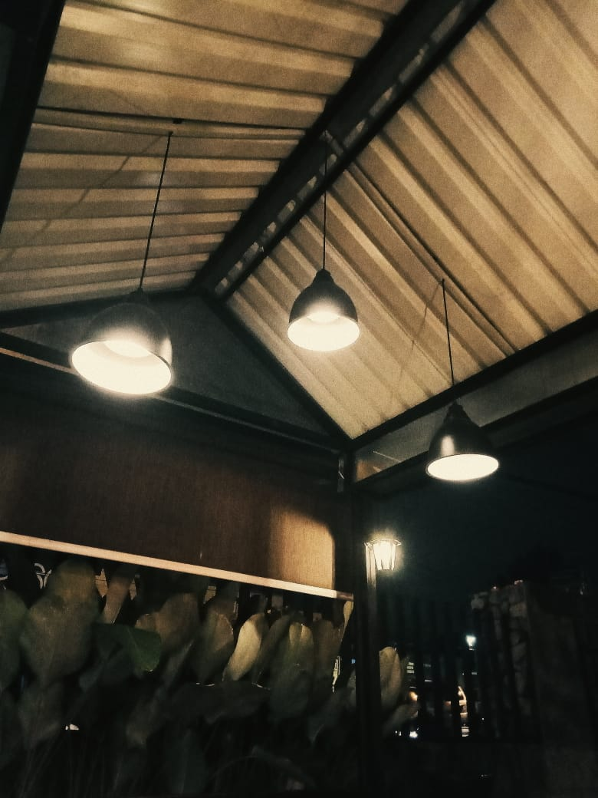
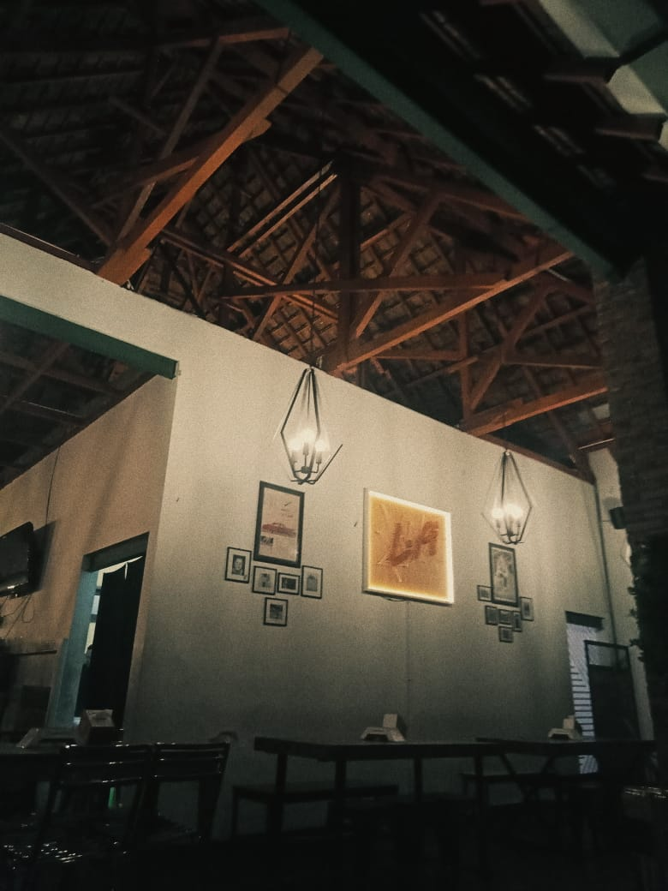

TEMPAT INSTAGRAMABLE YANG RECOMMENDED DI KAB. MALANG
Jan 18, 2019
Buat para pelajar atau mahasiswa, pastinya gabut itu mengganggu kegiatan belajar. Dannn pada akhirnya, refreshing atau liburan bakal jadi pelarian kegabutan mereka. Sudah menjadi hal yang biasa jika sekarang banyak dtemui tempat-tempat wisata baru atau pun cafe-cafe baru yang instagramable.
Inilah recommended tempat-tempat untuk menghilangkan gabut yang ada di Kabupaten Malang :
1. Paralayang Batu
Paralayang ini merupakan salah satu tempat hangout yang instagramable dengan banyaknya spot foto unik. Objek wisata Batu Malang ini berada di puncak gunung Banyak, dimana letaknya sangat dekat pusat kota Batu.
Diatas puncak pada ketinggian lebih dari 1.315 mdpl, sobat bisa menyaksikan lanskap pemandangan sangat eksotis. Terlebih ketika sobat datang kesana ketika malam hari, maka sobat bakal disuguhkan keindahan gemerlap keindahan lampu-lampu kota Batu Malang dan keindahan cahaya bintang-bintang di langit.
2. Coban Putri
Berada di kaki daratan membuat wilayah Malang raya tak habis memiliki potensi wisata alam yang indah dan eksotis, salah satunya coban atau dalam bahasa Indonesia yang berarti air terjun. Nama Coban Putri sendiri, diambil dari cerita masyarakat sekitar yang sering dilihat penampakan putri Kerajaan Singosari di air terjun ini. Nah, bagi kalian yang ingin menuju ke sana, tidak perlu merogoh kantong terlalu dalam, dengan membayar tiket masuk Rp 10.000 rupiah pengunjung dapat menikmati objek wisata Coban Putri dengan spot-spot fotonya.
3. Kebun Teh
Merupakan agrowisata perkebunan teh seluas 1.144 hektar dan memiliki panorama keindahan alam yang luar biasa. Kebun ini berada di dataran tinggi, dengan rentangan 950 mdpl hingga 1.250 mdpl. Kebun agrowisata ini merupakan satu satu nya kebun teh di Jawa Timur yang dikelola sebagai destinasi wisata.
4. Mie Setan Hamid Rusdi
Mie setan di Jl. Hamid Rusdi ini cocok digunakan tempat gabut karena tempat makan ini sangat instagramable. Meskipun terlihat lebih ramai di Mie Setan Jl. Bromo, namun tempat ini memiliki kesan klasik tapi elegan yang patut dicoba.
5. Cafe Apung Rawa Klampok
Salah satu keunikan Cafe Apung Senggreng adalah letaknya yang berada di tengah danau. Pengunjung yang ingin menikmati sajian di cafe ini harus menaiki perahu terlebih dahulu. Untuk mempermudah akses bagi pengunjung, pengelola telah menyediakan rakit besar yang mampu mengangkut lebih dari lima orang.Dengan meniru konsep wisata di Sungai Chaopraya Bangkok, Thailand, embung tersebut diolah menjadi cafe terapung atas kerja sama masyarakat dengan Dinas Sumber Daya Air (SDA) Kabupaten Malang.
6. Komika Cafe
Warung Kopi Komika adalah cafe dengan konsep yang unik, modern, natural disertai beberapa tempat indoor dan outdoor. Warung Kopi Komika dulunya merupakan tempat berkumpul komunitas menggambar dan para komik (sebutan untuk komunitas stand up komedi) serta para musisi jalanan malang.
7. Stadion Knjuruhan
Stadion Kanjuruhan adalah sebuah stadion sepak bola yang terletak di Kecamatan Kepanjen, Kabupaten Malang, Jawa Timur, Indonesia. Kapasitasnya berjumlah 40.000 tempat duduk. Stadion ini merupakan markas kesebelasan sepak bola asal Malang Raya, yakni Arema Indonesia.Selama ini tidak banyak disadari bahwa di sini juga terdapat spot foto yang bergaya kekinian.
8. Gunung Bromo
Gunung Bromo menyimpan sejuta keindahan yang sayang untuk dilewatkan. Bukan hanya matahari terbit, tapi kamu juga bisa menikmati keindahan alam lain yang ada di sekitar Gunung Bromo. Wisata bernuansa alam ini sangat indah jika digunakan sebagai spot foto. Bahkan untuk mendapatkan foto yang bagus kita bisa hanya dengan menggunakan kuda, hamparan pasir, kawah bromo, ataupun jeep nya.
9. Pantai Sendang Biru
Selain sebagai tempat wisata, Pantai Sendang Biru juga merupakan Tempat Pelelangan Ikan (TPI). Artinya, mayoritas mata pencaharian masyarakat setempat adalah sebagai nelayan. Hal ini bisa dilihat dari lusinan perahu yang berjejer menepi di sepanjang pantai.
10. Taman Byru
Tempatnya yang hampir seluruhnya berwarna biru ini sangat identik dengan pengunjungnya yang kebanyakan adalah pelajar. Suasana klasik vintage membuat tempat ini nyaman dengan gayanya yang instagramable.Tempat ini terletak di jl. Effendi, Kepanjen, Malang.
Popular post

